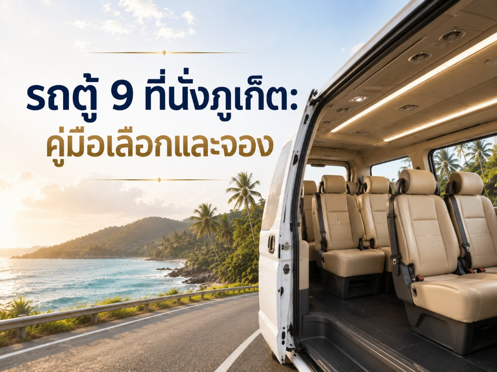

คู่มือเหมาคัน
เช่ารถตู้ภูเก็ตแบบเหมาคัน ดีอย่างไร เหมาะกับใครบ้าง
เช่ารถตู้ภูเก็ตแบบเหมาคัน ดีอย่างไร เหมาะกับใครบ้าง เปรียบเทียบครึ่งวัน-เต็มวัน ข้อดี ข้อควรทราบ และวิธีจองอย่างปลอดภัย ชัดเจน

Infinity Transport Phuket — เช่ารถตู้ภูเก็ตแบบเหมาคัน
คำถามที่พบบ่อยก่อนจองคือ “ควรเรียกทีละเที่ยว หรือเหมาคันไปเลยดีกว่า?” คำตอบขึ้นกับรูปแบบทริป แต่ถ้าคุณมีจุดหมายหลายแห่งในวันเดียว มีเด็ก มีผู้สูงอายุ หรืออยากได้ความเป็นส่วนตัว การเลือก รถตู้เหมาภูเก็ต มักให้ประสบการณ์ดีกว่าการเรียกรถซ้ำหลายรอบ
บทความนี้เป็นคู่มือตัดสินใจแบบตรง ๆ ว่า เช่ารถตู้ภูเก็ตพร้อมคนขับ แบบเหมาคัน ดีอย่างไร เหมาะกับใคร ไม่เหมาะกับใคร เลือกครึ่งวันหรือเต็มวันแบบไหน และมีข้อควรทราบอะไรบ้างก่อนโอนจอง
คำตอบสั้นสำหรับ Featured Snippet: รถตู้เหมาภูเก็ต คือการจองรถตู้พร้อมคนขับเป็นรายครึ่งวันหรือเต็มวัน เพื่อใช้เดินทางหลายจุดแบบส่วนตัว เหมาะกับครอบครัว กลุ่มเพื่อน และผู้ที่ต้องการความยืดหยุ่นสูง
เหมาคันต่างจากรับส่งเที่ยวเดียวตรงไหน
ก่อนเทียบราคา ควรเข้าใจนิยามให้ตรงกันก่อน
รับส่งเที่ยวเดียว
- จ่ายตามเส้นทางจากจุด A ไปจุด B
- เหมาะกับสนามบิน ↔ โรงแรม
- จบงานเมื่อถึงจุดหมาย
- คุมงบง่าย แต่ไม่ยืดหยุ่นถ้าอยากแวะเพิ่มหลายจุด
เหมาคัน (Charter)
- จ่ายตามช่วงเวลา เช่น ครึ่งวัน / เต็มวัน
- ใช้รถในช่วงนั้นได้หลายจุดตามตกลง
- เหมาะกับ รถตู้นำเที่ยวภูเก็ต และทริปถ่ายรูป
- ได้ความเป็น Phuket Private Van ชัดเจน
ดังนั้นถ้าวันนั้นมีแผนแค่ลงเครื่องแล้วเข้าโรงแรม การรับส่งเที่ยวเดียวก็พอ แต่ถ้าวันนั้นอยากเที่ยวต่อเนื่องหลายจุด การเหมาจะคุ้มทั้งเวลาและพลังงานมากกว่า
เช่ารถตู้ภูเก็ตแบบเหมาคัน ดีอย่างไร
ข้อดีหลักที่สัมผัสได้จริง
- คุมตารางเองได้
ไม่ต้องรอใคร ไม่ต้องตามกลุ่มทัวร์ และเลื่อนเวลาพักได้ตามสภาพอากาศ
- ลดความเหนื่อยของทั้งกลุ่ม
โดยเฉพาะเด็กเล็กและผู้สูงอายุ ที่ไม่ชอบขึ้นลงรถบ่อยหรือยืนคอยานาน
- คุ้มค่าเมื่อมีคนพอสมควร
กลุ่ม 6–8 คนหารค่าเหมาต่อหัว มักสวยกว่าเรียกแท็กซี่หลายเที่ยวตลอดวัน
- วางของไว้บนรถได้
กระเป๋ากล้อง เสื้อกันฝน ของว่าง หรือของซื้อระหว่างทาง จัดการง่ายขึ้น
- ภาพลักษณ์และการดูแลที่ดี
หากเลือก รถตู้ VIP ภูเก็ต จะเหมาะกับรับลูกค้าหรือวันพิเศษมากขึ้น
ตารางสรุปข้อดีตามประเภทผู้ใช้
| ผู้ใช้ |
ได้อะไรจากรถตู้เหมา |
เหตุผลสั้น ๆ |
| ครอบครัว |
จังหวะพักยืดหยุ่น |
เด็กเหนื่อยเมื่อไหร่ก็พักได้ |
| กลุ่มเพื่อน |
เที่ยวด้วยกันทั้งวัน |
ไม่ต้องแยกคัน |
| คู่รัก |
ความเป็นส่วนตัว |
ไม่แชร์รถกับคนแปลกหน้า |
| ทีมงานบริษัท |
ตรงเวลา มีใบเสนอราคา |
วางแผนประชุม/ไซต์วิสิตง่าย |
| คอนเทนต์ครีเอเตอร์ |
คุมแสงและโลเคชัน |
ย้ายจุดถ่ายรูปได้รวดเร็ว |
เหมาะกับใครบ้าง และใครอาจยังไม่ต้องเหมา
เหมาะมากกับ
- คนที่มีแผนเที่ยวอย่างน้อย 3 จุดในวันเดียว
- คนที่ต้องการ รถตู้เที่ยวภูเก็ต แบบไม่ผูกกับแพ็กเกจทัวร์
- กลุ่มที่มีสัมภาระหรืออุปกรณ์เยอะ
- ผู้ที่อยากได้คนขับประจำตลอดวัน เพื่อสื่อสารง่าย
- ทริปวันสำคัญ เช่น วันเกิด วันครบรอบ รับแขก
อาจยังไม่จำเป็นสำหรับ
- คนที่ออกจากโรงแรมเพียงมื้อเดียวแล้วกลับพักผ่อน
- คนที่เน้นนั่งชายหาดหน้าโรงแรมเป็นหลัก
- คนเที่ยวเดี่ยวที่งบจำกัดและยืดหยุ่นเรื่องเวลารอได้
ในกรณีหลัง อาจใช้บริการรับส่งเฉพาะช่วงจำเป็นก่อน แล้วค่อยตัดสินใจเหมาในวันที่มีแผนแน่น
ดูตัวเลือกบริการทั้งหมดได้ที่ หน้าบริการรถตู้ภูเก็ต และข้อมูลแบรนด์ที่ หน้าแรก
เลือกเหมาครึ่งวัน หรือเต็มวัน แบบไหนดี
นี่คือจุดที่คนจองสับสนบ่อยที่สุด
ตารางช่วยตัดสินใจครึ่งวัน vs เต็มวัน
| คำถาม |
ถ้าตอบว่า “ใช่” |
แนะนำ |
| อยากออกก่อน 09:00 และกลับหลัง 17:00 ไหม? |
ใช่ |
เต็มวัน |
| มีจุดหลักแค่ 1–2 จุดในช่วงบ่ายไหม? |
ใช่ |
ครึ่งวัน |
| จะไปพังงาหรือกระบี่วันเดียวไหม? |
ใช่ |
เต็มวัน (ออกเช้า) |
| มีเด็กเล็กที่อาจเหนื่อยง่ายไหม? |
ใช่ |
เต็มวัน แต่จุดไม่ต้องเยอะ |
| อยากแค่ไปโปร่งเทพตอนเย็นไหม? |
ใช่ |
ครึ่งวันช่วงบ่าย |
ตัวอย่างการใช้งานจริง
- ครึ่งวันบ่าย: โรงแรม → เมืองเก่า → โปร่งเทพ → กลับ
- เต็มวันรอบเกาะ: โรงแรม → พระใหญ่ → อาหารกลางวัน → จุดชมวิว → หาด/คาเฟ่ → กลับ
- เต็มวันข้ามจังหวัด: ใช้เป็นฐานของทริป รถตู้นำเที่ยวภูเก็ต ต่อพังงาหรือกระบี่
หากยังไม่แน่ใจ ส่งแผนคร่าว ๆ ไปที่ หน้าติดต่อ ให้ทีมงานช่วยแนะนำแพ็กเกจให้พอดีวัน
ต้นทุนที่ควรคิดก่อนจองรถตู้เหมา
การดูแค่ตัวเลขค่ารถอย่างเดียวอาจไม่พอ ลองคิดแบบ “ต้นทุนทั้งวัน”
ต้นทุนที่มองเห็นชัด
- ค่าเหมารถตามช่วงเวลา
- ส่วนต่างของรถมาตรฐานกับรถ VIP
- ค่าใช้จ่ายเพิ่มหากขยายเวลานานกว่าแพ็กเกจ
ต้นทุนแฝงที่เหมาคันช่วยลดได้
- ค่าเรียกรถซ้ำหลายครั้ง
- ค่าเวลาที่เสียไปกับการรอ
- ความเหนื่อยของสมาชิกในกลุ่มจนเที่ยวไม่เต็มที่
- ความเสี่ยงหลงทางหรือจอดรถไม่ไดในจุดยอดนิยม
ข้อควรทราบเรื่องราคา
- เรทช่วงไฮซีซันอาจสูงกว่าโลว์ซีซัน
- ทริปข้ามจังหวัดคิดต่างจากเที่ยวในเกาะ
- เงื่อนไขค่าล่วงเวลาควรถามให้ชัดก่อนยืนยัน
- โปรโมชันบางรายการอาจไม่รวมค่าที่จอดบางจุด
แนวเทียบราคาเบื้องต้นดูได้ที่ หน้าราคา
ขั้นตอนจองรถตู้เหมาภูเก็ตอย่างปลอดภัย
ลำดับที่แนะนำ
- กำหนดวันที่ จำนวนคน และสไตล์ทริป
- เลือกว่าต้องการครึ่งวันหรือเต็มวัน
- ระบุจุดหมายหลัก 2–4 จุด
- เลือกรุ่นรถให้พอดีจำนวนคนและกระเป๋า
- ขอใบเสนอราคาและยืนยันเป็นลายลักษณ์อักษร
- เก็บช่องทางติดต่อคนขับก่อนวันเดินทาง
ข้อมูลที่ควรได้ก่อนโอนเงิน
- ชื่อบริษัท / ผู้ให้บริการชัดเจน
- รุ่นรถโดยประมาณ
- เวลาเริ่ม–สิ้นสุดบริการ
- สิ่งที่รวมและไม่รวมในราคา
- นโยบายเลื่อนวันหรือยกเลิก
จองผ่านช่องทางทางการของเว็บได้ที่ หน้าติดต่อ Infinity Transport Phuket
สำหรับข้อมูลสาธารณะด้านการท่องเที่ยวและสถานที่ ใช้ประกอบการวางแผนได้จาก Tourism Thailand
ข้อควรทราบก่อนวันเดินทาง
- ยืนยันเวลาและจุดรับคืนอีกครั้งเย็นก่อนหน้า
- เตรียมแผนสำรองกรณีฝนตก
- อย่ายัดจุดเกินจนไม่มีเวลาลงรถจริง
- หากมีผู้สูงอายุ ให้เว้นช่วงพักชัดเจนทุก 2–3 ชั่วโมง
- แจ้งคนขับหากต้องการแวะซื้อของฝากตอนท้ายวัน
สัญญาณว่าแพ็กเกจ “พอดี” กับคุณ
- กลับถึงโรงแรมแล้วยังมีแรงยิ้มได้
- ไม่มีใครในกลุ่มบ่นว่ารีบเกินไป
- ได้รูปและประสบการณ์ตามที่ตั้งใจ
- ไม่เสียเวลากับการรอหรือหาที่จอดเอง
นั่นคือนิยามความสำเร็จของ รถตู้ภูเก็ต แบบเหมาคันที่ดี ไม่ใช่การสะสมจำนวนจุดให้มากที่สุด
สรุปท้ายบทความ
รถตู้เหมาภูเก็ต เหมาะกับคนที่อยากได้ทั้งความสะดวกและความยืดหยุ่นในวันเดียว โดยเฉพาะครอบครัว กลุ่มเพื่อน และผู้ที่ต้องการทริปส่วนตัวโดยไม่ตามตารางทัวร์รวมกลุ่ม
ถ้าแผนของคุณมีหลายจุด หรืออยากใช้วันนั้นให้คุ้มโดยไม่เหนื่อยกับโลจิสติกส์ เช่ารถตู้ภูเก็ตพร้อมคนขับ แบบเหมาคันคือตัวเลือกที่ตอบโจทย์ชัดเจน และยังต่อยอดเป็น รถตู้นำเที่ยวภูเก็ต หรืออัปเกรดเป็น รถตู้ VIP ภูเก็ต ได้ตามโอกาส
พิมพ์มาได้เลยว่ามีกี่คน อยากไปจุดไหน และต้องการครึ่งวันหรือเต็มวัน
ทีม Infinity Transport Phuket จะช่วยแนะนำรถและเวลาที่เหมาะสมให้ที่ หน้าติดต่อ
สำรวจบริการก่อนตัดสินใจได้ที่ หน้าบริการรถตู้ภูเก็ต
หรือดูตัวเลือกรับส่งสนามบินประกอบทริปที่ หน้ารับส่งสนามบิน
จองรถตู้ภูเก็ต
กลับไปหน้าบทความทั้งหมด
คำถามที่พบบ่อย (FAQ)
รถตู้เหมาภูเก็ต นับเวลาตั้งแต่เมื่อไหร่?
โดยทั่วไปนับจากเวลาที่รับผู้โดยสารตามนัด จนถึงเวลาส่งกลับจุดหมายสุดท้าย ควรยืนยันชั่วโมงที่รวมในแพ็กเกจตอนจอง
เหมาแล้วแวะกี่จุดก็ได้จริงหรือ?
แวะได้หลายจุดภายใต้กรอบเวลาและระยะทางที่ตกลงไว้ การเพิ่มจุดที่ไกลมากอาจกระทบเวลาหรือมีค่าใช้จ่ายเพิ่ม ควรคุยแผนหลักตั้งแต่แรก
มีค่าล่วงเวลาไหม ถ้ากลับช้ากว่ากำหนด?
หลายแพ็กเกจมีเรทล่วงเวลา แนะนำถามอัตราก่อนใช้บริการ และอัปเดตคนขับหากแผนจะยืดออกไป
เหมาคันรวมน้ำมันหรือยัง?
ส่วนใหญ่ค่ารถเหมาวันที่เป็น Phuket Van Service จะรวมน้ำมันในเส้นทางปกติแล้ว แต่ทริปพิเศษหรือขยายระยะทางไกลมากควรยืนยันเป็นรายกรณี
ควรเลือกเก๋ง รถตู้ปกติ หรือรถตู้ VIP ภูเก็ต?
ดูจากจำนวนคน งบ และโอกาสการใช้งาน หากเป็นครอบครัวทั่วไป รถตู้มาตรฐานพอ หากรับแขกหรือวันพิเศษ การอัปเกรด VIP จะเหมาะสมกว่า
จองคูณหลายวันติดกันลดได้ไหม?
หลายครั้งคุยแพ็กเกจหลายวันได้ราคาที่จัดการง่ายขึ้น โดยเฉพาะทริปที่มีทั้งรับส่งสนามบินและวันเที่ยวคั่นกลาง สอบถามโดยตรงผ่านหน้าติดต่อจะชัดที่สุด
ถ้าสมาชิกในกลุ่มป่วยกลางทาง ปรับแผนได้ไหม?
ได้ นี่คือข้อดีของรถส่วนตัว สามารถตัดจุด กลับโรงแรมก่อน หรือเปลี่ยนเป็นทริปชิลได้เร็ว โดยแจ้งคนขับทันที